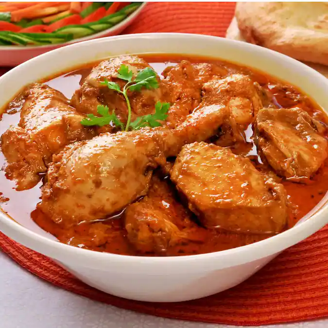

Chicken Korma

- In a bowl, mix chicken pieces with yogurt, ginger-garlic paste, turmeric, red chili powder, and salt. Let it marinate for at least 30 minutes to enhance flavor.
- Heat ghee or oil in a pan. Sauté sliced onions until golden brown. Remove half for garnish and blend the rest into a paste with soaked cashews or almonds.
- In the same pan, add whole spices (cardamom, cloves, bay leaf), then the onion-nut paste. Cook well, then add coriander powder, garam masala, and a little water.
- Add marinated chicken to the masala. Cook on medium heat until the chicken is browned and sealed with the spice mix.
- Add more yogurt and a bit of cream or milk. Cover and simmer on low heat until the chicken is tender and the gravy turns rich and aromatic.
- Top with fried onions and chopped coriander. Serve hot with naan, paratha, or rice for a rich, Mughlai-style meal.